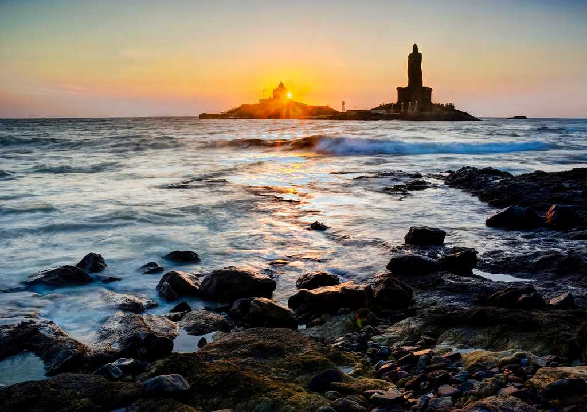

tourist places
The Thiruvalluvar Statue has a height of 95 feet (29 m) and stands upon a 38 foot (11.5 m) rock that represents the 38 chapters of "virtue" in the Thirukkural. The statue standing on the rock represents "wealth" and "pleasures", signifying that wealth and love be earned and enjoyed on the foundation of solid virtue.[12] The combined height of the statue and pedestal is 133 feet (40.5 m), denoting the 133 chapters in the Thirukkural. It has a total weight of 7000 tons.The statue, with its slight bend around the waist is reminiscent of a dancing pose of the ancient Indian deities like Nataraja. It was sculpted by the Indian sculptor Dr. V. Ganapati Sthapati, who also created the Iraivan Temple. Its opening ceremony was on 1 January 2000. The monument was hit by the Indian Ocean tsunami on 26 December 2004.[13] but stood unaffected. The statue is designed to survive earthquakes of unexpected magnitude, such as magnitude 6 on the Richter Scale occurring within 100 kilometers. This is far beyond that of any event recorded in the regional history. During maintenance work, as well as during rough sea, entry is restricted for tourists[14].